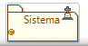
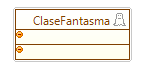
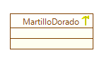
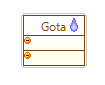

Este
perfil está asignado al arquitecto encargado de identificar malas
prácticas recurrentes (antipatrones) a la hora de diseñar
soluciones de software.
Las etiquetas que posee este perfil son:
- Muerto:
Identifica un elemento inservible, bien sea este un artefacto, caso de
uso, componente, interfáz, nodo de emplazamiento, operación o sistema.

Figura 1. Representación de Sistema Muerto
- Fantasma: Esta etiqueta se aplica al diagrama de clases e identifica un objeto cuya única función es pasar información a otros objetos.

Figura 2. Representación de Clase Fantasma
- Martillo Dorado:
Este antipatrón es aplicado igualmente en diagramas de clases. Indica
una buena solución a la que se le intenta dar aplicabilidad
universal, lo que genera un sobreuso de la abstracción dentro del
proyecto.

Figura 3. Representación de clase Martillo Dorado
- Gota: Aplica al digrama de clases y operaciones, indica una clase u operación con muchas lineas de código.

Figura 4. Representación de clase gota
- Espagueti: Indica una operación confusa, especialmente por la utilización indebida de estructuras de código.
|